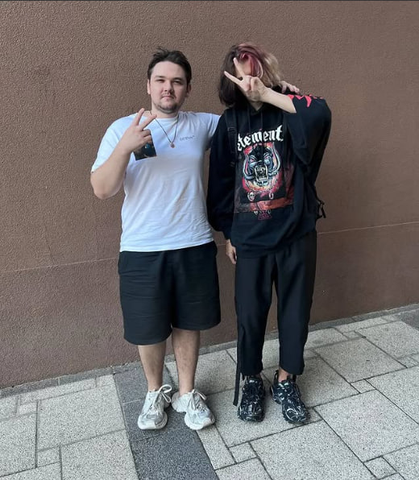
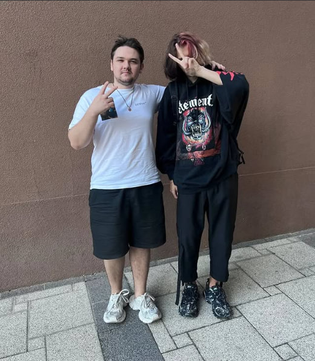
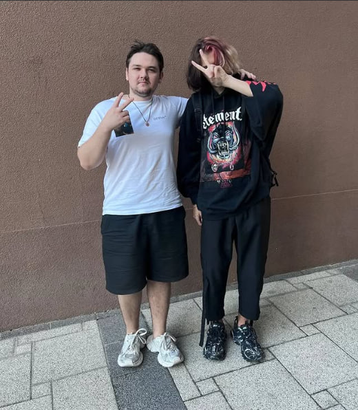

4x Major winner and 2x The International winner
Yatoro is the best carry player in the world who reached Rank top 1 immortal few times.Alternate nicknames of all time: YATOROGOD, Yatoro雨(prime), Raddan(not too bad, but could be better).
In July 2024, he changed his name to "Raddan", meaning "Rain All Day, Dota All Night", and a reference to the character Radahn from Elden Ring. He said it was not a permanent change, but he just wanted some variety.
